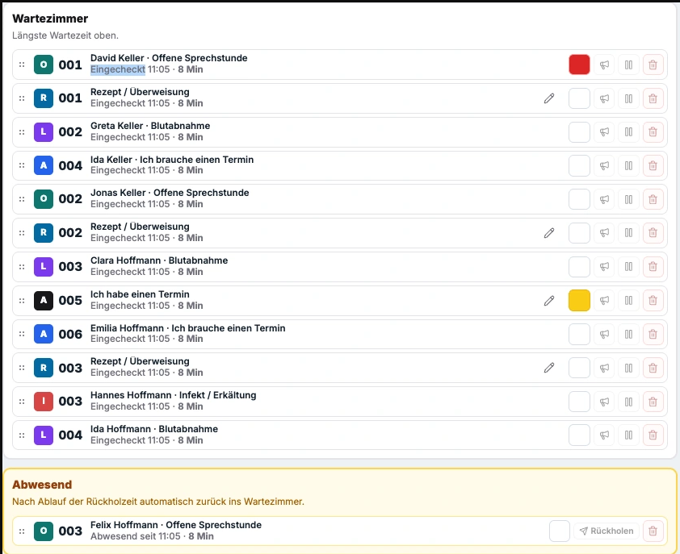

Patientenaufruf, digitale Anamnese und Patientenportale im Vergleich
„Ist Frau Weber noch im Labor?“
Erfahren Sie, was Ihr Praxisverwaltungssystem (PVS) heute schon kann, woran Sie Lücken in Ihren Abläufen erkennen und wie Sie diese schließen können.
Wann lohnt sich eine Ergänzung zu Ihrem PVS?
1 Verschenken Sie kein Geld. Was kann Ihr PVS heute schon?
| PVS · Herstellerquelle | Dokumentierte Funktion |
|---|---|
| CGM MEDISTAR ↗ | Wartebereiche und freie Räume einsehen |
| TURBOMED ↗ | Patienten bei der Fallaufnahme auf die Warteliste setzen |
| medatixx ↗ | Patienten Räumen zuordnen und für belegte Räume vormerken |
| x.isynet ↗ | Patienten aus dem Terminkalender in die Warteliste übernehmen |
Prüfen Sie selbst! Was ist in Ihrer Praxis freigeschaltet? Was davon nutzt Ihr Team?
2 Wo liegen Ihre Lücken und Engpässe?
Denken Sie an die letzte volle Sprechstunde. Musste jemand im Labor nachfragen, wo Frau Weber wartet? Hat die MFA Angaben aus einem Bogen abgetippt? Im Praxischeck den eigenen Engpass prüfen →
Welche Lücken kann Software schließen?
Jede Lösung hat ihren Schwerpunkt. Prüfen Sie zuerst, welche Ihrem Team einen konkreten Handgriff abnimmt oder Ihren Patienten den nächsten Schritt erleichtert. Vergleichen Sie dann die Kosten der passenden Angebote.
- Termin und Anmeldung
- Termine online buchen und sich am Terminal in der Praxis anmelden.
- Warteliste und Aufruf
- Patienten im Wartezimmer per Anzeige aufrufen. Je nach System kann das Team Abwesenheiten vermerken und Wartende zurückholen.
- Stationswechsel
- Die Anzeige weist Patienten den Weg zum nächsten Raum. Die MFA sieht, wer welchem Raum zugeordnet ist und welche Räume sie als Nächstes belegen kann.
- Formulare und Dokumentenaustausch
- Patienten füllen Anamnesebögen digital aus und reichen Unterlagen ein. Das Team ordnet sie der Patientenakte zu und kann Befunde über ein Portal zurücksenden.
- Digitale Extras
- Zum Beispiel Gäste-WLAN anbieten oder Parkgebühren automatisch ermäßigen.
Anbieter im Vergleich: Funktionen, Betrieb und Kosten
Welche Arbeit übernimmt die Software zum genannten Preis? Vergleichen Sie Aufruf, Check-in, Stationswechsel, Formulare und Online-Termine.
- ● Im Preis enthalten
- $ Kostet zusätzlich
- – Im Tarif nicht belegt
- Hardware, Einrichtung und Betreuung ggf. extra.
- ¹ Doctolib-Hausarzttarif ohne KI-Telefon laut Anbieter: 139 €/Monat.
| Lösung / Schwerpunkt | Betrieb | Softwarepreis | Leistungsumfang |
|---|---|---|---|
| LISAPatientenaufruf | Cloud |
49 €je Behandler/Monat netto |
Aufruf direkt aus tomedo.
$Praxis-TV
|
| cleverQAufruf & Besuchersteuerung | Cloud oder lokal | Auf AnfrageTarif Advanced |
$SMS nach
Verbrauch und Praxis-TV
|
| IdanaAnamnese & Formulare | Cloud |
ab 79 €je Praxis/Monat · netto Jährliche Zahlung, nutzungsabhängig |
QR-Aufnahme: Tarifzuordnung offen.
$Fragebogeneditor
|
| samediTermine & Praxisorganisation | Cloud |
ab 59 €Tarif Essential · je Arzt/Monat Umsatzsteuer bestätigen |
$SMS nach
Verbrauch
|
| DoctolibPatientenmanagement | Cloud |
229 €¹je Arzt/Monat · inkl. MwSt. Jahresabo mit KI-Telefon |
Dokumente im Patientenkonto.
|
| WartezimmerBesuchsabläufe vor Ort · Produkt des Autors | Lokal | 0 €Lizenzgebühr für zulässigen Eigenbetrieb |
Aufnahmebogen und Upload vor Ort.
$SMS zum
Rückholen
|
Cloud oder lokal: Wer trägt das Betriebsrisiko?
Cloud. Mit der Gebühr bezahlen Sie für die Bereitstellung und die vereinbarte Verfügbarkeit. Der Anbieter übernimmt Updates und kümmert sich bei Störungen um seinen Dienst. Wie schnell er hilft, regelt Ihr Vertrag.
Lokal. Ihre Praxis trägt die Kosten für Rechner, Strom und IT-Support. Läuft Wartezimmer auf einem vorhandenen Praxis-PC, kann die Anschaffung eines zusätzlichen Rechners entfallen. Der Manager erleichtert Installation und Updates. Bei einem Ausfall zählt, wie schnell Ihre Praxis-IT helfen kann.
Was entscheidet? Wer darf auf Patientendaten zugreifen, und wie lange kommt Ihre Praxis bei einem Ausfall zurecht? Wenn Ihr Team Anmeldung, Aufruf, Raumwechsel und Unterlagen vorübergehend von Hand organisiert, kann die Sprechstunde weiterlaufen.
Leistungsumfang, Einrichtung und Export im Detail
- LISA
- Bildschirm- und Sprachaufruf sind enthalten. Wer dort auch eigene Praxisinformationen zeigen möchte, benötigt das Modul Praxismarketing: 39 € netto im Monat für den ersten Bildschirm, 29 € für jeden weiteren. In Kombination mit dem Aufruf sinkt der Preis um 5 € je Bildschirm. Selbsteinrichtung ist möglich; Service und LISA Box kosten extra. Vollständiger Datenexport offen. Der Aufruf aus tomedo ist integriert, andere Praxen nutzen die separate Anwendung.
- cleverQ
- Der Tarif Advanced bündelt QR- oder Terminal-Tickets, Bildschirmaufruf und Online-Termine. Wenn Sie nur vor Ort aufrufen, können Sie auch den Tarif Essential anfragen. SMS werden monatlich nach Verbrauch abgerechnet. Für die lokale Docker-Variante benötigt der Anbieter Fernzugriff für Installation und Updates. Statistikexport belegt; vollständigen Export klären. Für die API-Anbindung ist das konkrete PVS zu prüfen.
- Idana
- Cloud-Dienst mit Windows-/macOS-Anwendung; Patienten nutzen den Browser. Der Einstiegstarif enthält Fragebögen und deren Auswertung. Wer eigene Bögen anlegen oder Vorlagen selbst bearbeiten möchte, zahlt für den Fragebogeneditor 379 € netto. Die PVS-Einrichtung kostet ab 299 € netto. Für die Übergabe sind GDT, PDF und JSON dokumentiert.
- samedi
- Im Tarif Essential sind Online-Terminbuchung, Selbstanmeldung bei Ankunft und Patientenkonto enthalten. Das Konto zeigt auch digitale Formulare an. Für Praxen, die einen Standardbogen versenden und ausgefüllt zurückerhalten möchten, nennt die Modulpreisliste 30 € je Arzt und Monat; SMS kosten dort 0,08 € pro Credit. Prüfen Sie, welche Konditionen für Ihr Angebot gelten. Das digitale Wartezimmer mit Wartezeitprognose steht ab Comfort Praxis (99 € je Arzt und Monat) zur Verfügung. CSV-Ausgabe nach Vertragsende zeitlich begrenzt. Dokumentierte Schnittstellen sind GDT, VDDS und x.time.
- Doctolib Patientenmanagement
- Im Hausarzttarif Patientenmanagement buchen Patienten Termine online und geben vorab ihre Daten zur Aufnahme ein. Der Patientennavigator zeigt dem Team den Besuchsstatus. Ob Selbstanmeldung bei Ankunft und SMS ohne Aufpreis enthalten sind, geht aus der Tarifansicht nicht hervor. Dokumentenaustausch und Stamm-/Termindatenexport dokumentiert; vollständigen Dokumentenexport klären.
- Wartezimmer
- Manager für macOS/Windows x64 und Browseroberflächen. Aufruf, Räume, mehrstufige Abläufe und Selbstanmeldung am Terminal. Das besuchsbezogene Portal im Praxisnetz enthält einen allgemeinmedizinischen Aufnahmebogen. Eine Online-Terminbuchung ist nicht enthalten. Beim optionalen Zurückholen per SMS fallen Versandkosten beim SMS-Dienst an. Keine Standard-PVS-Anbindung; Source-available ohne zugesicherten Komplettbetrieb. Hardware, Einrichtung, Individualentwicklung und Betreuung verursachen gegebenenfalls Kosten.
„Offen“ kennzeichnet eine unzureichende Quellenlage und belegt keine fehlende Funktion.
Wie viel Zeit lässt sich im Praxisalltag sparen?
Eine kürzere Anmeldung ist für Patienten ein Gewinn. Wie viel Zeit für Ihr Team frei wird, hängt davon ab, welche Handgriffe und Wege entfallen.
Selbstanmeldung · Beobachtungsstudie
2:47 Minuten kürzere Anmeldung
In einer US-Ambulanz für Orthopädie dauerten 28.636 Anmeldungen am Terminal im Vergleich zu früheren Anmeldungen im Schnitt 2 Minuten und 47 Sekunden weniger. Wie viel MFA-Zeit frei wurde, blieb offen. Studie: Check-in Kiosks in the Outpatient Clinical Setting ↗
Digitale Anamnese · Herstellerbefragung
Rund vier Minuten je Befragung – selbst eingeschätzt
35 Ärzte schätzten in einer Idana-Befragung die Ersparnis pro Anamnese auf rund vier Minuten ärztliche Zeit und vier Minuten MFA-Zeit. Die Zahlen beruhen auf Selbstauskünften. Idana: Ergebnisse und Methodik, S. 4–5 ↗
Portalfragebögen · Randomisierte Pilotstudie
5,9 statt 17,7 Minuten Personalzeit
Bei der Nachbefragung nach sechs Monaten brauchte das Studienpersonal pro vollständiger Antwort im Portal 5,9 Minuten, am Telefon 17,7. Im Portal antworteten 10 von 15 Teilnehmenden vollständig, am Telefon alle 15. Pilotstudie in JAMIA Open, Tabellen 2–3 ↗
Welche Handgriffe entfallen in Ihrer Praxis? Im Team prüfen →
Anbieter im Vergleich: Funktionen, Betrieb und Kosten
Welche Arbeit übernimmt die Software zum genannten Preis? Vergleichen Sie fünf Aufgaben der Anmeldung: Patienten vor Ort aufrufen, sie bei Ankunft selbst einchecken lassen, Formulare ausfüllen, Termine online buchen und Patienten per SMS benachrichtigen.
- ● Im Preis enthalten
- $ Kostet zusätzlich
- – Im Tarif nicht belegt
| Lösung / Schwerpunkt | Betrieb | Softwarepreis | Leistungsumfang |
|---|---|---|---|
| LISA ↗Patientenaufruf | Cloud |
49 €je Behandler/Monat netto |
$
Praxis-TV als Zusatzmodul
PVS: Aufruf aus tomedo, sonst separate Anwendung.
|
| cleverQ ↗Aufruf & Besuchersteuerung | Cloud oder lokal | Auf AnfrageTarif Advanced |
PVS:
API und Krankenhausanbindungen; konkrete PVS-Anbindung prüfen.
|
| Idana ↗Anamnese & Formulare | Cloud |
ab 79 €je Praxis/Monat · netto Jährliche Zahlung, nutzungsabhängig |
$
Fragebogeneditor: 379 € netto
PVS:
GDT, PDF und JSON; Übernahme in die konkrete PVS-Version prüfen.
|
| samedi ↗Termine & Praxisorganisation | Cloud |
ab 59 €Tarif Essential · je Arzt/Monat Umsatzsteuer bestätigen |
PVS:
GDT/VDDS/x.time
dokumentiert; Dokumentenexport klären.
|
| Doctolib ↗Patientenmanagement | Cloud |
229 €je Arzt/Monat · inkl. MwSt. Jahresabo mit KI-Telefon¹ |
PVS: Dokumentenaustausch und Stamm-/Termindatenexport;
PVS-Anbindung klären.
|
| Wartezimmer ↓Besuchsabläufe vor Ort · Produkt des Autors | Lokal | 0 €Lizenzgebühr für zulässigen Eigenbetrieb |
PVS: CSV-Kontaktabgleich; Dateien/PDF. GDT als
Individualentwicklung.
|
Ein Strich bedeutet, dass die Quellen keine eindeutige Zuordnung zum Tarif erlauben. Hardware, Einrichtung und Betreuung können auch bei enthaltenen Funktionen hinzukommen. ¹ Doctolib: Hausarzt-Auswahl; ohne KI-Telefon laut Preishinweis 139 €/Monat, Abrechnungsdetails bestätigen.
Gesamtkosten über drei Jahre
Kalkulation: Einrichtung + Hardware + 36 × laufende Gebühren + Betreuung + interner Aufwand. Vergleichbar sind Angebote für dasselbe Szenario einschließlich Schnittstellen, Updates und Datenmitnahme.
PVS-Module und Schnittstellen im Detail
Prüfen Sie an einer Unterlage, was Ihr PVS bereits abdeckt. Wie empfängt Ihr Team das Dokument, ordnet es der richtigen Person zu und legt es in der Akte ab? Ein vorhandenes Modul kann Ihrer Praxis eine zusätzliche Anwendung ersparen.
PVS-Kompatibilität bezeichnet unterschiedliche Integrationsstufen: Parallelbetrieb, Dateiübergabe oder direkte Schnittstelle. Entscheidend sind PVS-Version, übertragene Daten und verbleibende manuelle Schritte.
Für den Kontaktabgleich kann CSV genügen. Wenn sich die benötigten Stammdaten selten ändern, kann ein regelmäßig aktualisierter Export den Zweck erfüllen. Neue Patienten und Änderungen müssen im Abgleich berücksichtigt werden; eine automatische Dokumentenübergabe in die Patientenakte ist damit nicht verbunden.
Wartezimmer unterstützt diesen CSV-Abgleich bereits. GDT- oder andere PVS-Anbindungen lassen sich bei Bedarf als Individualentwicklung ergänzen. Voraussetzungen sind ein geeignetes PVS-Profil, gegebenenfalls dessen Freischaltung und ein geprüfter Übergabeprozess. Sie gehören derzeit nicht zum Standardumfang. Planungsstand der PVS-Anbindung ↗
medatixx + gesund.de
Nachrichten und Dokumentenaustausch für unterstützte medatixx-Systeme; die Anbindung ist kostenfrei, das PVS kostenpflichtig.
Unterstützte Systeme und Funktionen ↗tomedo + arzt-direkt
Messenger und Dokumentenaustausch sind für tomedo derzeit kostenlos; digitale Patientenformulare werden als gesondertes kostenpflichtiges Modul angeboten.
Vom Dokument zur Patientenakte
Für jede Lösung zählt der vollständige Datenweg vom Patienten bis zur korrekten Ablage im PVS.
-
Abgeben
Abgabe zu Hause oder vor Ort? Smartphone, Praxisgerät oder Alternative ohne Smartphone?
-
Zuordnen
Wie werden Identität und Zuordnung geprüft, Namensgleichheit erkannt und Fehlzuordnungen korrigiert?
-
Prüfen
Wer prüft Inhalt und Vollständigkeit, bearbeitet Rückfragen und auffällige Dateien?
-
Übernehmen
Werden Originaldateien, PDFs oder strukturierte Antworten übertragen? Wer bestätigt die PVS-Ablage vor Löschung der Zwischenkopie?
Welche Angaben übernimmt Ihr PVS automatisch, welche muss Ihr Team von Hand nachtragen?
Wartezimmer im bestehenden Praxisablauf
Wartezimmer verbindet Anmeldung, Warteliste, Räume und Aufruf mit optionaler Dokumentenabgabe. Patientenakte, Dokumentation und Abrechnung bleiben im PVS.
Ausgelegt auf die gemeinsame Übersicht mehrerer Behandelnder und Stationen. Terminal und Anzeigen lassen sich später ergänzen.

Installation und Wiederherstellung
Der Manager führt durch Paketprüfung, Installation, Start, Updates und Wiederherstellung der Einstellungen. Im vorgesehenen Ablauf sind keine Konsolenbefehle nötig. Betriebssystem, Docker, Netzwerk und laufende Betreuung bleiben Aufgaben der Praxis beziehungsweise ihres IT-Dienstleisters.
Entwickler-Richtwert: etwa fünf Minuten für die Basisinstallation auf vorbereitetem Rechner. Vorausgesetzt sind laufendes Docker und das Installationspaket. HTTPS, Patientenzugang und Praxiskonfiguration kommen hinzu.
Eine Neuinstallation kann gesicherte Einstellungen übernehmen. Laufende Besuche werden nicht wiederhergestellt; Geräte müssen neu gekoppelt werden. Ein Ersatzablauf bleibt erforderlich.
Installation und Recovery im Detail ↗Lokale Verarbeitung und Löschung
Unterlagen bleiben nur für den laufenden Besuch: Nach Export, Verwerfen, endgültiger Entlassung oder Tagesreset werden sie gelöscht.
Exportierte Dateien bleiben erhalten und müssen separat archiviert und gesichert werden. Zugriffsschutz gilt auch für temporäre Daten.
Nicht exportierte Unterlagen können bei einem Containerneustart verloren gehen und müssen dann erneut abgegeben werden. Bearbeiten Sie offene Unterlagen vor Wartungsarbeiten und Updates.
Kein Cloud-Backend für den Kernbetrieb; externe Dienste sind für Zertifikate und optionale Nachrichten möglich.
Dokumente, Löschung und Portalzugang →Aktueller Formularumfang: allgemeinmedizinische Erstanamnese und Datenschutz-Einwilligung. Weitere Vorlagen erfordern eine Projekterweiterung; ein frei bedienbarer Formularbaukasten ist nicht enthalten. Vorlagen und Erweiterung ↗
Besuche vor Ort organisieren
- Gemeinsame Übersicht, Aufruf und Stationswechsel.
- Lokale Ergänzung des bestehenden PVS.
- Formulare und Uploads während des Besuchs.
- Individuelle Abläufe, bei Bedarf mit IT-Unterstützung.
Vor und nach dem Besuch kommunizieren
- Formulare von zu Hause ausfüllen.
- Dauerhafte Patientenkonten und Befundversand.
- Umfangreiche Fachfragebogen-Kataloge.
- Automatisierte, strukturierte PVS-Übernahme.
Wie werden Besuchsabläufe technisch abgesichert?
Flow-Core prüft zulässige Besuchsübergänge serverseitig. Raumkapazität und Voraussetzungen werden vor Zuweisung geprüft; zusammengehörige Änderungen sind transaktional abgesichert. Geschützte Ablaufvorlagen verhindern widersprüchliche Konfigurationsänderungen während laufender Besuche.
Aktueller Sicherheitsstand: Im Manager und eingebetteten Setup ist CVE-2026-111497 weiterhin offen. Lokaler Betrieb beseitigt diese Runtime-Lücke nicht. Befund, Einschränkungen und Stand der Behebung ↗
Häufige Fragen zum Betrieb
Ist lokaler Betrieb automatisch datenschutzkonform?
Nein. Auch temporäre lokale Verarbeitung unterliegt der DSGVO. Zugriffsschutz, sichere Übertragung, Löschung und die Einbindung von Dienstleistern müssen geregelt sein. Begriff der Verarbeitung beim Europäischen Datenschutzausschuss ↗
Was sichert das Wartezimmer-Backup?
Einstellungen und Konfiguration, gegebenenfalls HTTPS-Daten; keine Besuche oder Patientenunterlagen. Das unverschlüsselte Backup kann Zugangsdaten und private Schlüssel enthalten und muss geschützt aufbewahrt werden. Sichern Sie exportierte Unterlagen separat. Backupumfang und Wiederherstellung ↗
Praxischeck: Bei welchem Handgriff wünschen Sie sich Entlastung?
Öffnen Sie zuerst den Punkt, der Ihr Team im Alltag am meisten beschäftigt. Sie können mehrere Abläufe nebeneinander prüfen.
Patienten vom Arbeitsplatz aus aufrufen
Rufen Sie probeweise vom Arbeitsplatz aus über Ihr Praxisverwaltungssystem (PVS) auf. Erkennt die wartende Person auch ohne Smartphone, dass sie gemeint ist und in welches Zimmer sie gehen soll? Gelingt das, kann die vorhandene Lösung genügen.
Was brauchen Sie für den Aufruf per Bildschirm?
LISA berechnet das Aufrufmodul je Behandler. Eigene Praxisinformationen auf dem Bildschirm gehören zum separat berechneten Praxismarketing. Für einen Aufruf mit Tickets kommt auch cleverQ infrage. Lassen Sie sich den Preis für Ihre Arbeitsplätze und Geräte nennen. Tarife und Herstellerquellen vergleichen →
Kann ein Patientenaufrufsystem ohne PVS-Schnittstelle sinnvoll sein?
Ja, sofern der Nutzen im eigenständigen Ablauf den Aufwand für zusätzliche Eingaben rechtfertigt. Entscheidend ist der vollständige Prozess einschließlich Patientenzuordnung und PVS-Übernahme.
Nach dem Labor sehen, wer wieder wartet
Lassen Sie im Labor einen Besuch abschließen. Sieht das Sprechzimmer, wer als Nächstes wartet? Weiß die Patientin beim Verlassen des Labors, wo sie aufgerufen wird? Prüfen Sie beides zuerst mit Ihrer vorhandenen Warteliste.
Wie behält Ihr Team mehrere Stationen im Blick?
Bei Wartezimmer können Sie mit Teamübersicht, Räumen und Stationswechseln beginnen. Terminal und Anzeige lassen sich bei Bedarf ergänzen. Für das Zurückholen per SMS fallen Versandkosten an. Ablauf und Betriebsaufwand ansehen →
Ist Wartezimmer kostenlos und Open Source?
Der zulässige Eigenbetrieb ist lizenzgebührenfrei; Hardware, Einrichtung und Betreuung können Kosten verursachen. Die Source-available-Lizenz erlaubt Anpassungen und IT-Dienstleistungen, beschränkt aber Weitergabe und Produktangebote. Sie ist keine OSI-Open-Source-Lizenz und verpflichtet nicht zu Support oder Updates. Lizenz verständlich erklärt →
Angaben aus Fragebögen in die Patientenakte übernehmen
Nehmen Sie einen häufig verwendeten Bogen und verfolgen Sie ihn bis zur richtigen Patientenakte. Wer möchte, soll ihn während des Wartens ausfüllen können. Prüfen Sie auch, wie die MFA jemanden beim Ausfüllen unterstützt.
Reicht Ihrer Praxis ein Aufnahmebogen vor Ort?
Wartezimmer enthält einen allgemeinmedizinischen Aufnahmebogen im lokalen Portal. Gehen Sie die Zuordnung und den Datei-Export mit der MFA durch. Eine GDT-Anbindung erfordert Individualentwicklung. Übergabe ins PVS prüfen →
Möchten Sie eigene Fachbögen erstellen und ändern?
Bei Idana sind vorhandene Fragebögen im Tarif enthalten. Der Editor für eigene Bögen und die Einrichtung der PVS-Anbindung haben eigene Preise. Weitere Vorlagen für Wartezimmer erfordern eine Projekterweiterung. Tarif, Extras und Quellen ansehen →
Unterlagen vor dem Besuch austauschen
Prüfen Sie, ob Ihr PVS bereits Nachrichten oder Dokumente über ein Patientenportal empfangen kann. Für einen ausgefüllten Fragebogen zählt auch, wie das Team ihn der richtigen Akte zuordnet.
Wie können Ihre Patienten einen Bogen von zu Hause zurücksenden?
Bei samedi kann das Patientenkonto Formulare anzeigen. Für das Versenden und Empfangen eines Standardbogens führt der Anbieter ein Zusatzmodul. Prüfen Sie dessen Preis je Arzt und die Übergabe an Ihre PVS-Version. Module und Konditionen ansehen →
Was unterscheidet ein lokales Portal von einem Internetportal?
Wartezimmers Portal ist besuchsbezogen im Praxisnetz erreichbar. Eigene Smartphones benötigen einen Patientenzugang mit HTTPS und geprüfter Netztrennung. Dauerhafte Konten und öffentliches Ausfüllen von zu Hause sind nicht vorgesehen. Netzwerkvoraussetzungen →
Praxistest: Aufwand und Nutzen im Team bewerten
Für einen typischen Ablauf prüft die MFA-Leitung die Handgriffe, die ärztliche Leitung den Nutzen und die IT die Betriebsfähigkeit.
Testen Sie den Ablauf zunächst mit fiktiven Daten. Erfassen Sie im freigegebenen Betrieb, wie oft Ihr Team nachfragt, Angaben doppelt erfasst oder einen zusätzlichen Weg geht. Vergleichen Sie dafür ähnliche Situationen vor und nach der Einführung.
Checkliste zum Abhaken und Ausdrucken. Keine Übertragung oder dauerhafte Speicherung der Angaben.